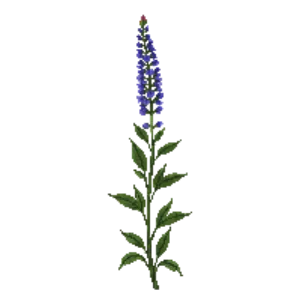

Anise/Blue Sage
Salvia guaranitica

Anise/Blue Sage is a perennial for focal point, mid-border, suited to shade and partial shade and clay, loam, sandy soil or acid soil, flowering Jul, Aug, Sep, Oct.
| Type | Perennial |
|---|---|
| Mature height | 150 cm |
| Spread | 90 cm |
| Aspect | shade and partial shade |
| Foliage | Deciduous |
| Hardiness | USDA 8a-10b |
| Pollinator-friendly | Yes |
| Pet-safe | Yes |
Where to use it in a border
At around 150 cm, it sits best toward the back of a border, or on its own as a focal point with room around it. Give it about 90 cm of room to spread. It is hardy across USDA zones 8a to 10b, so check it suits your area before planting.
It appears in our lists of shade, clay soil, sandy soil, acid soil, pollinator-friendly plants, pet-safe plants.
Flowering through the year
Worth knowing
- It tolerates acid soil but dislikes shallow chalk.
- It tolerates a shaded, north-facing spot.
- Its flowers are valued by bees and other pollinators.
Good companions
Plants that share its conditions and style, chosen to complement its place in the border:
- Atamasco Rain Lilyto edge in front
- Bottlebrush Buckeyefor height behind it
- Cleyerafor height behind it
- Creeping Phlox 'Sherwood Purple'to edge in front
- Devilwoodfor height behind it
- Firebushfor height behind it
Garden styles
Foundation planting Native Wildlife garden Woodland
See Anise/Blue Sage set in a full border, with spacing and companions worked out for your own conditions, in Border Builder.